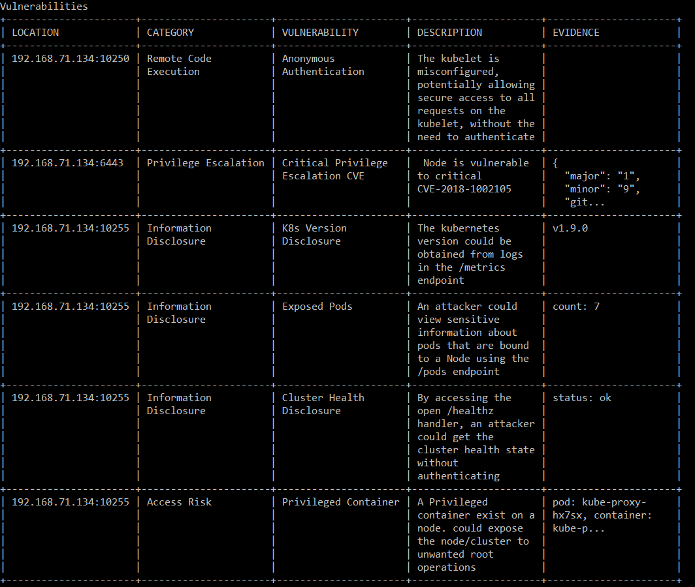

The commands on this page can be run in a terminal or command prompt
There are several tools available for penetration testers carrying out a security test of Kubernetes clusters. The one we are going to concentrate on in this section is kube-hunter available from Aqua Security There are several options to run kube-hunter, it can be run as a container inside the cluster, as a python script or you can visit the website and register for a token and run it with docker as described here.
Once you have registered with an email address you will get a command to run similar to: docker run -it --rm --network host aquasec/kube-hunter --token eyJ0eXAiOiJKV1QiLCJhbGciOiJIUzI1NiJ9.eyJ0aW1lIjoxNTUyN
jUwNjg2LjQ2NTc1MDIsImVtYWlsIjoicG93ZXJqb2huNjRAZ21haWwuY29tIiwiciI6ImZkNmUyNTQ3In0.L-SDU7AKoF4Gw9zoSudwYte_s_z-3oG4okML
w9gQG1o
You will then be presented with several options:
Remote scanning (scans one or more specific IPs or DNS names)
Subnet scanning (scans subnets on all local network interfaces)
IP range scanning (scans a given IP range)
Choose option 1 Remote Scanning and enter the ip address of the cluster. To get the cluster IP run: kubectl cluster-info
In our sample case the ip is 172.42.42.100
A table of vulnerabilities is then presented:

Amongst the results we can see it has been reported that the cluster is vulnerable to CVE-2018-1002105.
DESCRIPTION OF CVE-2018-1002015
This vulnerabilty affected the API-Server and took advantage of a weakness - Once a legitimate authorized request was made to the API server the API Server did not check error messages in sequenced requests which allowed bypassing of the authorization logic. Specifically, when a HTTP request contained a HTTP upgrade header, the request was successful whether or not the response cotained the successful switching protocol 101 response. For a more detailed description consult this excellent blog post by Arial Zelivansky of Twistlock.
The two escalation paths are:
Through api-server calls made to any aggregated API server endpoints which could be exercised through discovery api calls which are by default permitted to anonymous users.
Through the API server to kubelets - through pods exec/attach/port-forward API’s these are not permitted to anonymous users by default
Kubernetes has patched versions:
v1.10.11
v.1.11.5
v1.12.3
v1.13.0-rc.1
Any versions below these are potentially vulnerable. All Kubernetes partners had been notified prior to the disclosure and had applied patches to their offerings. So as a tester it is important to prove the vulnerability really exists, as most providers may have patched unsupported versions.
There are now several POC's available online to demonstrate the explotation of this vulnerability, we are going to use the method available in the aforementioned blog This exploit targets the Aggregation API, the aggregation layer provides extensions to the Kubernetes API. One of those extensions is the metrics service, which can make discovery calls to all the pods in the cluster. The expoilt code developed by Arial Zelivansky targets the metrics service and uses the service account system:serviceaccount:kube-system:horizontal-pod-autoscaler which has a default ClusterRoleBinding which allows access to the metrics service. The X-Remote-User header allows impersonation of a user.
Give execution permissions to the poc.rb file (chmod +x).
Execute the file.
For convenience I have created an nginx image with all those steps pre-configured, running: kubectl create deployment nginxexploit --image=cavedweller/nginx-1002105:v1 kubectl get pods
Copy the name of the nginxexpoit pod kubectl exec -it nginxexploit-xxxxxxxxx -- /bin/bash(replace xxxxxxx with appropriate value) cd 2d09ec0ad600667980359394a2a65a0d/ (Enter cd 2 and hit tab to auto-complete.) ./poc.rb
The result is information leakage and reveals all the pods in the cluster. Now that we have proved that the cluster is vulnerable to CVE-2018-1002105 the mitigation is to advise the client to upgrade the cluster to a patched version of Kubernetes.